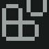
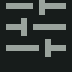
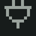

60+ video models
Video
Kling, Veo, Seedance,
Runway, Wan, MiniMax,
Grok Imagine, LTX
- MiniMax H3
- $0.011/s
- Veo 3.1 Fast
- $0.061/s

Antseed for creators
Credits run out. Providers fail. You are still switching tools.
The problem · Your creative workflow
Credits, fast hours and queue time run out first.
Multiple logins between the idea and the final cut.
You see the cost after the work is done.
Another integration to rebuild before you can use it.
Due at 2am · Model access
60+ video models
Kling, Veo, Seedance,
Runway, Wan, MiniMax,
Grok Imagine, LTX
35+ image models
Flux, GPT Image, Nano Banana,
Seedream, Recraft,
Ideogram
Voice models
ElevenLabs Turbo,
xAI TTS,
Qwen TTS
Hero shot. B-roll. Thumbnail. Voiceover. Choose the model each needs.
Source-pitch price examples in USD, not live quotes. Rates vary by provider and configuration.
Same-day model access depends on provider listings and availability.
Due at 2am · Provider rerouting
The submission cannot wait for one provider.
Reroute a failed request and keep the edit moving.

Detect a failed provider request.
Reroute to a compatible provider.Keep the other model jobs running.

Use the same endpoint for the next attempt.Failover requires a compatible, available provider.
Capacity and provider limits still apply.
01:48 · DUE AT 02:00
Hero shot · rerouted
Action
B-roll
Thumbnail
Voiceover
Veo · Provider A failed → Provider B rendering
Proof · AntSeedStats
Data as shown: 16 November 2026 · 13:30 UTC
View AntSeedStatsNext step · Book a Call
Bring a shot from your next project. We’ll render it together and compare the result and bill.
Built on Antseed’s provider network. You keep your choice of models.
Pick a scene from
your next project.
See the output.
Compare the usage bill.
Use the workflow with your team.
Ship your next video.
Arrow keys to navigate · F fullscreen